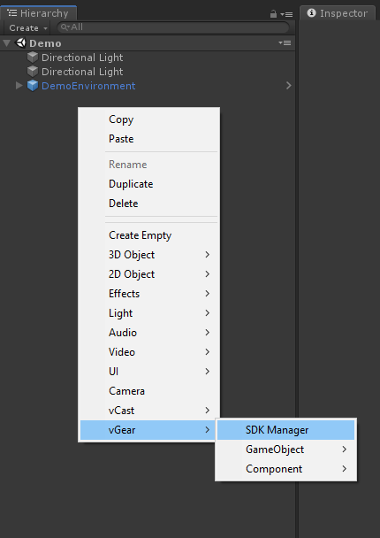

Start with VotanicXR
SDK Manager (vGear) is the manager of the VotanicXR SDK, which is a prefab (prefabricate) provided by Votanic SDK. It is based on another prefab vCast, and implemented with other extension features.
This page describes how to build a playable executable.
Before start
Hardware
Configuration
Configure the following settings before import the VotanicXR SDK:
- In
Edit > Project Settings > Player, set theScripting Runtime Versionto .Net 4.x Equivalent if you are using Unity 2018.2. - In
Edit > Project Settings > Editor, set theVersion Controlis Visible Meta Files andAsset Serializationis Mixed. - In
File > Build Settings, set theArchitectureinto x86_64.
Import SDK
Import the VotanicXR SDK for Unity:
- Right-click in Project
Assets > Import Package > Custom Package, and select the SDK package download. - In the Importing Package dialog, make sure that all package options are selected and click Import.
Activation
To use VotanicXR SDK, activation is required with either trial version or registration key. Unregistered message will be shown on console and the application will have watermark and can only play 30 minutes.

- After import the SDK package, License window will be popped out. If not, please go to
VotanicXR > License. - If you use the Trial version, please enter your email, read and agree the License Terms and Conditions to start. If you use the Registration version, please enter the registration key, read and agree the License Terms and Conditions to start.
Add SDK Manager
Start Unity Project imported VotanicXR SDK Manager.
Right-click in the Hierarchy window.
Select
VGear > SDK ManagerTwo gameobjects will be shown in the Hierarchy window,
vGearandStartPoint.vGearis the SDK Manager of the VotanicXR system, and the child gameobjects are the features of the the system.StartPointis a gameobject to coordinate the start point of the player.If you are using controllers with
Role System, please selectRole Systemat the[Settings] > XR SupportofV Gear (Script)in vGear prefab. We will use the Vive controller and HMD withRole Systemas VR controller in this series of tutorial.
Detail of the components is described in Detail of vGear Components.
Build the scene
Go to
Assets > Votanic > VotanicXR > vGear > Scenesand open the demo scene provided. (Optional)
Go to
File > Build Setting.Click
Add Open Scenesif you need it.Click
Build, (Note: Recommended to create a new folder to save your build folders).When the build completed, the build folder will be popped out at the new window.
The built folder will contains some
batch(.bat) files with the format{Project Name}_[{Environment}].bat. Double click the batch file with the environment you are using.